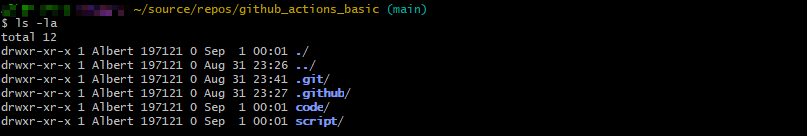
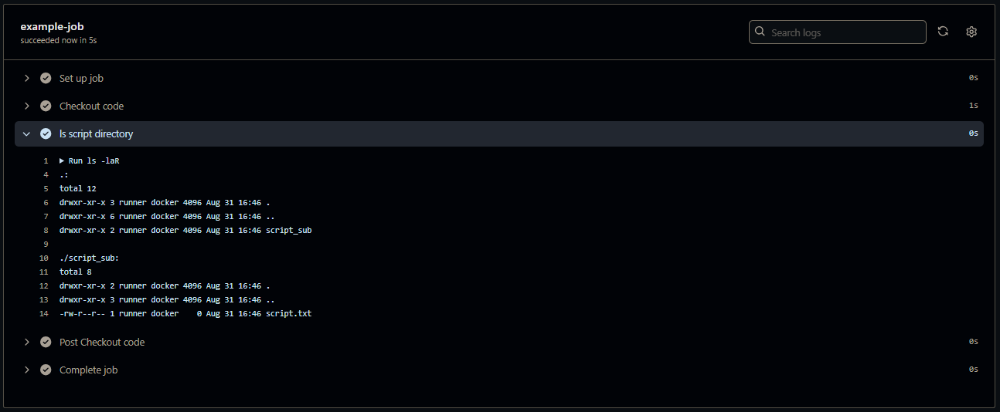

[Github_Actions] Github_actions_basic
Contents
Basic Intro
此篇文章會簡易介紹 GitHub actions 的操作和基本設定
GitHub Actions 是一個內建於 GitHub 的 CI/CD 平台, 專門用來自動化構建, 測試和部署流程. CI 代表 Continuous Integration, CD 代表 Continuous Delivery or Deployment
底下幾個項目為基本的核心概念
-
Workflow：- 定義自動化的一系列任務, 通常寫在 YAML 文件中, 當特定事件發生時會被觸發, 也可以手動執行.
-
Event：- 觸發 Workflow 的條件, 可以是 GitHub 事件(如 push, PR), 也可以是手動觸發或定時任務.
-
Job：- Workflow 中的一個具體工作, 像是 build app 或 deploy code 等.
-
Runner：- 執行 Job 的環境, 可以是 Ubuntu, Windows, MacOS 或自托管的 Runner.
-
Step：- Job 中具體的操作步驟, 可以是 cmd 指令, script 或引用現有的 GitHub Actions.
Workflow Basic
Github workflow 一律建立在 .github/workflows/ 底下的 yml file 名稱一般會稱為 main.yml, 也可以任意命名, 不過一般命名會和 workflow 功能相關的名稱
資料夾底下可以有多個 workflow yml file
Github workflow 最基本元素包含底下內容
|
|
name: workflow 的名稱, 會顯示在 github actions 上, 如果沒有設定就會以 worlflow yml file 的 path 為名稱
-
on: 就是上面所說的 events, 用來定義 workflow 如何被觸發, 一個 workflow 可以有多種 trigger 方式 -
jobs: workflow 實際執行的作業, job 的數量沒有上限, 預設情況下會並發執行 -
jobs.<job_name>.runs-on: 指定作業運行的環境(就是 runner) -
jobs.<job_name>.steps: job 實際要執行的 tasks, 每個 step 可以 run commands, run setup tasks, or run an action -
jobs.<job_name>.steps[*].name: 每一個 step 的名稱, 會顯示在 github 上 -
jobs.<job_name>.steps[*].run: 指定要在 step 中執行的任意 command 或 script
下方為利用上述基本的語法完成 echo Hello Word 的功能
|
|
底下為一些功能的補充說明
on :
主要有以下幾種 trigger 方式
push: 在有 commit 推到指定的 branch
pull_request: 在有 pull request 建立或更新時觸發
schedule: 透過 cron 表達式定期觸發
workflow_dispatch手動觸發 workflow
jobs:
job 一般而言是並發的, 但是可以透過 needs 來進行順序控制
|
|
jobs.<job_name>.steps:
step底下除了 run 可以執行 task 也還有其他方式
uses: 可以使用現成的 action, 可以是 github public 或者自身有的也可以是 docker registery 上的 images, 使用時會建議加上版號或者 tag, 來確保版本不變
with: 配合 uses 指定 action 的參數
env: 定義在該 step 中可用的環境變數
|
|
actions
基本上看到看到 steps 底下為 uses 就知道要去 marketplace 找尋指定名稱的 action
@後面表示指定我們想要的 version
|
|
actions/checkout@v4 主要的功能就是讀取 repo 中的內容, 在此範例中, 如果沒有使用該 action, 底下的 ls -la 指令就會無法列出內容
在一般 workflow 中有許多 job 可能是要執行 repo 中的一些 code 如果沒有此 action 就無法使用
schedule.cron
schedule.cron 就很像一般 linux 中的 crontab, 單位的順序一樣是分, 時, 日, 月, 週, 但是最短的 interval 為 5 分鐘
|
|
default
使用 default 可以為 workflow 所有 job 設定預設的配置
例如：working-directory 就可以限定在哪個資料夾執行
除了增加效率之外
對於絕對路徑或相對路徑而言也是很方便
|
|


從這個例子可以看到, 雖然我有兩個資料夾 script 和 code, 但是只會針對 script 底下的內容去做執行 ls -laR 的動作
on
pull_request.branches
pull_request.paths
上方剛剛一直都有看到 on.push 的內容, 意思就是在有 commit 推到 github 上的 repo 就會自動執行
但是當我想要指定在 pr 時並同時針對特定資料夾做改變時再啟動 actions 就可以用以下寫法
|
|
* 單星號
- 作用： 符合目前目錄下的所有檔案和資料夾，但不包括子資料夾中的內容.
- 範例：
specify-path/*會符合specify-path/目錄下的所有文件，但不會符合子目錄中的文件.
** 雙星號
- 作用： 符合目前目錄及所有子目錄中的所有檔案和資料夾.
- 範例：
specify-path/**會符合specify-path/目錄下的所有檔案和子目錄中的所有檔案.
差異總結
*只符合目前目錄中的文件，不會進入子目錄.**會符合目前目錄及所有子目錄中的檔案和資料夾.
ENV
在 GitHub 中也有套用環境變數的方式, 並且有 Variable 和 Secret 兩種
顧名思義, variable 是一般的可變數據, 可以隨時修改並查看內容, 而secret 用於存放如 key, passwd 等敏感信息, 通常無法查看其內容以保證安全性
Github Secret 和 Variable 在外不設定的位置如下：
在 github_repo 中 -> Settings > Secrets and variables > Actions
從外部讀取 secret 和 variable 到 yml file 的 env 中會使用 ${{ secrets.variable_name }} 來引用 secret, 使用 ${{ vars.variable_name }} 來引用變數, 在 job 中, 透過 ${{ env.variable_name }} 來引用環境變數。
可以用以下幾種方式來引用變數, 也可能還有一些其他的寫法
-
${{ }} 語法： 這是在 YAML 檔案中引用 GitHub Actions 上下文、環境變數等的標準方式 例如：
${{ env.VARIABLE_NAME }}或${{ secrets.SECRET_NAME }} -
環境變數的使用： 在 run 指令中，可以直接使用
$VARIABLE_NAME或使用${VARIABLE_NAME} -
引號的使用： “${{ env.VARIABLE_NAME }}” 和 ${{ env.VARIABLE_NAME }} 在大多數情況下是等價的 但在某些情況下, 使用
""可以避免 YAML 解析問題, 特別是當 value 包含特殊字元時 -
在 shell 命令中(run: 部分):
-
使用
$VARIABLE_NAME或${VARIABLE_NAME} -
例如：
echo $GITHUB_WORKSPACE或echo ${GITHUB_WORKSPACE}
- 在 workflow 檔案的其他所有部分：
-
必須使用 ${{ env.VARIABLE_NAME }}
-
對於 secrets，使用 ${{ secrets.SECRET_NAME }}
-
例如：if: ${{ env.STAGE == ‘production’ }}
- 重要補充：
-
即使是預先定義的 GitHub 環境變數（如 GITHUB_WORKSPACE），在非 shell 部分也必須使用 ${{ env.VARIABLE_NAME }} 語法
-
github 上下文（如 github.event）總是使用 ${{ }} 語法，不論在哪裡使用
另外在 github variable 中 ${{ }} 內部的空格是不影響的, 取決於個人或公司的習慣
環境變數的範圍：在 job 級別定義的環境變數只在該 job 中可用, 而在 workflow 級別定義的環境變數在所有 job 中都可用
|
|
Author PawPaw
LastMod 2024-09-01